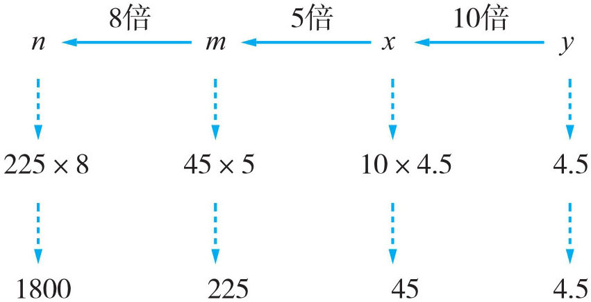
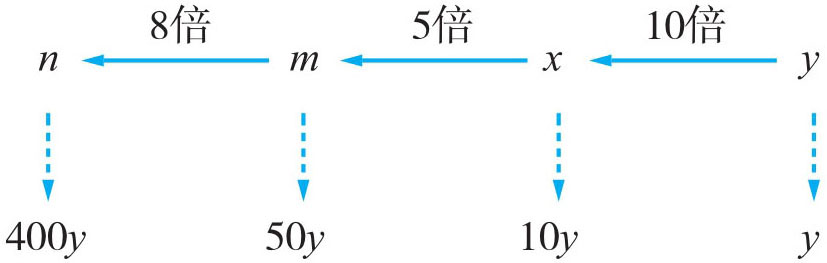
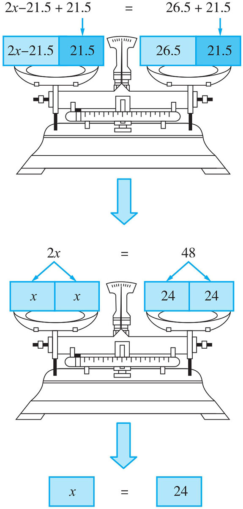
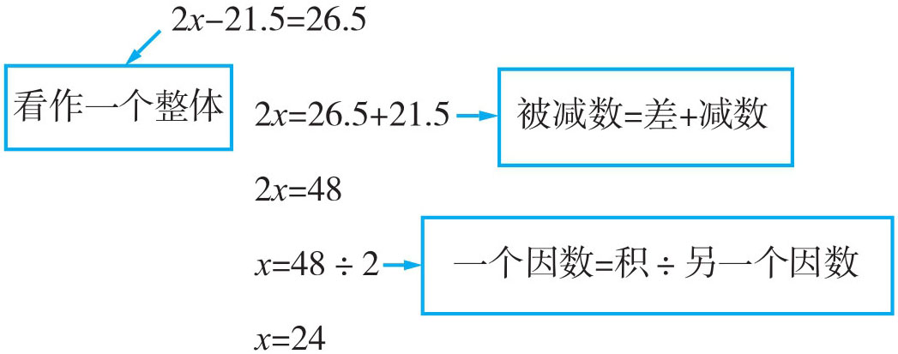
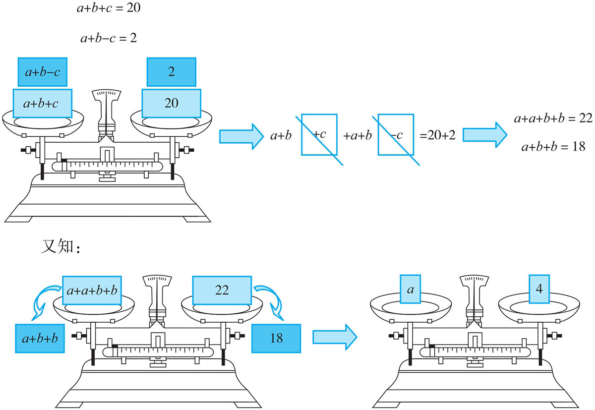
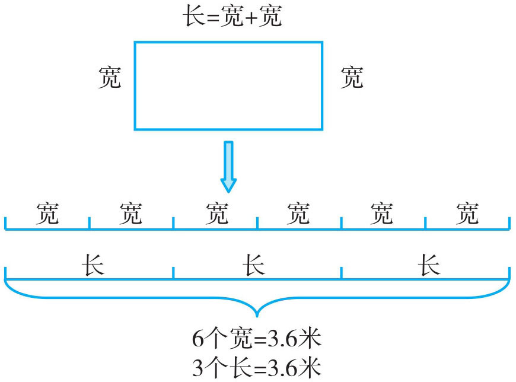
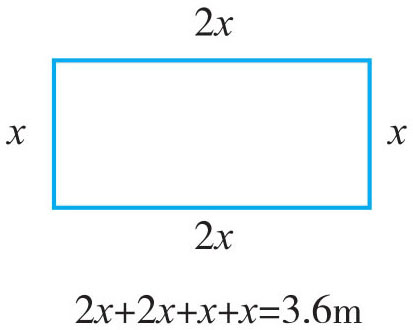
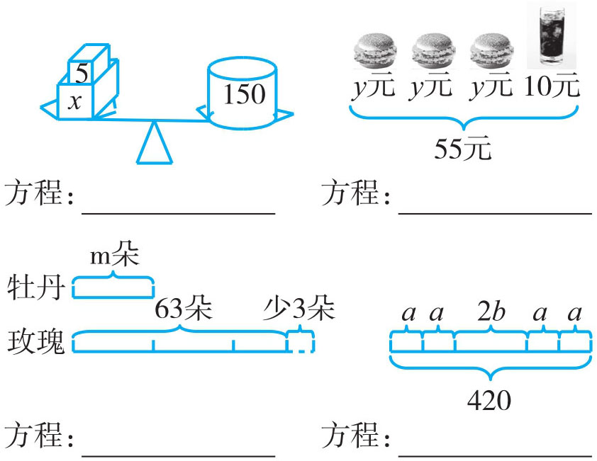
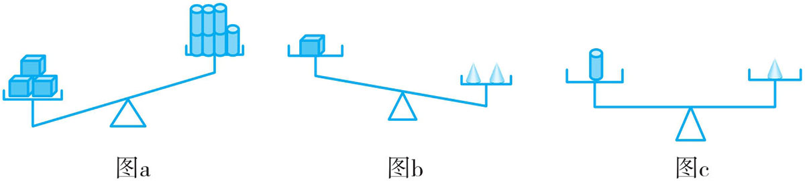

| 方程问题 | 对应的经典题 |
| 用字母表示数 | 2、3、5、m 、11、13…中m =? |
| 用含有字母的式子表示数量关系 |
怎么表示林林的爸爸比他大25岁？ 写等量关系的问题 |
| 方程概念的建立 | 总价＝单价×数量 |
| 求方程的解 | 天平的问题（方程概念的建立及求解方程） |
| 用方程解决问题 | 标准量未知，已知量是标准量的几倍多（或少）几，求标准量的问题 |
例1 已知x 是y 的10倍，m 是x 的5倍，n 又是m 的8倍，求当y =4.5时，2x +3y +m +8n 的值。
方法一：

方法二：

方法一：当y =4.5时，x =4.5×10=45，m =45×5=225，n =225×8=1800。
2x +3y +m +8n =2×45+3×4.5+225+1800×8=90+13.5+225+14400=14728.5
方法二：由已知得：x =10y ，m =10y ×5=50y ，n =50y ×8=400y 。
2x
+3y
+m
+8n
=2×10y
+3y
+50y
+8×400y
=20y
+3y
+50y
+3200y
=3273y
=3273×4.5=14728.5
例2 解方程。
2x -21.5=26.5 18.3÷x =6.1
小学阶段解方程的方法通常有两种：一是根据等式的性质求解；二是根据四则运算各部分之间的关系求解。根据等式的性质求解方程更具普遍性，也是学生进入初中后求解方程的主要方法，但小学生利用各部分之间的关系来解方程也不失为一种快而有效的方法。图解如下：
（1）
方法一：

方法二：

（2）18.3÷x =6.1的解法同（1）
（1）方法一：2x -21.5=26.5
解：2x -21.5+21.5=26.5+21.5
2x =48
2x ÷2=48÷2
x =24
方法二：2x -21.5=26.5
解：2x =26.5+21.5
2x =48
x =48÷2
x =24
（2）方法一：18.3÷x =6.1
解：18.3÷x ×x =6.1×x
18.3=6.1×x
18.3÷6.1=6.1×x ÷6.1
x =3
方法二：18.3÷x =6.1
解：x =18.3÷6.1
x =3
可进行检验：把x =3代入18.3÷x =6.1中，得到
左边=18.3÷x =18.3÷3=6.1
右边=6.1
因为左边＝右边
所以x
=3是18.3÷x
=6.1的解。
例3 已知a +b +c =20，a +b +b =18，a +b -c =2，求a 、b 、c 的值。
题中的每个方程都有三个未知数，在小学阶段我们要求a 、b 、c 的值，必须将含三个未知数的方程通过一次或两次转化，变成只含一个字母的方程。可以根据等式的性质，将两个方程左右两边进行同时加减，逐步消去一些未知数，再求解。图解如下：

再将a =4代入a +b +b =18中，求出b =7，以此推出c 的值为9。
根据a +b +c =20，a +b -c =2得出
a +b +c +a +b -c =20+2
a +a +b +b =22
又根据a +b +b =18得出
a +a +b +b -(a +b +b )=22-18
a =4
将a =4代入a +b +b =18，求出b =7。
再将a =4，b =7代入a +b +c =20，求出c =9。
所以a
=4，b
=7，c
=9。
例4 下面这幅画的长是宽的2倍，做这幅画的边框共用了3.6米的木条，那这幅画的长、宽、面积分别是多少？
此题中要求长、宽、面积，必须根据“边框共长3.6米”这个条件，3.6米的长度，是上下两边的长与左右两边的宽的总和，但长与宽都没有告诉具体的长度，只知长是宽的2倍，这里得进行一次长与宽的转化，长转化为宽，整个边框就可看成6个宽，宽转化为长，整个边框就变成3个长。或者假定宽为x （宽为标准量），长即为2x ，以此列出方程求解。图示如下：

或

方法一：整个边框可看作1×6=6（个）宽；
一个宽的长度是3.6÷6=0.6（米）；
一个长的长度是0.6×2=1.2（米）；这幅画的面积是0.6×1.2=0.72（平方米）。
答：这幅画的长为1.2米，宽为0.6米，面积为0.72平方米。
方法二：解：设边框的宽为x 米，长则为2x 米。
2x ×2+x ×2=3.6
6x =3.6
x =0.6
长：0.6×2=1.2（米）
面积：1.2×0.6=0.72（平方米）
答：这幅画边框的长为1.2米，宽为0.6米，面积为0.72平方米。
1．用含有字母的式子表示下列数量关系。
（1）a 只青蛙 张嘴， 只眼睛， 条腿。
（2）鸡与兔各有b 只，鸡兔共有 只，鸡脚有 只，兔脚有 只。鸡兔的脚一共有 只。
（3）小猫有m 只，小狗的只数比小猫只数的3倍多2只，小狗有 只。
（4）一盒巧克力x 元，一盒薯片y 元，8盒巧克力 元，a 盒巧克力与b 盒薯片共 元。
2．看图列方程。

3．根据图a 和图b ，可以判断图c 中的天平 端下沉。（填“左”或“右”）

4．解方程（第一个要求检验）。
（1）7x
-31.2=18.5
（2）68-4x
=24
（3）2x
-3×0.3=4.6
（4）3(x +0.2)=4(x +0.1)
5．当a
=1.5，b
=5时，求4a
+10b
×3+6a
的值。
6．已知a
+b
=1.8，a
-b
=0.2，求a
与b
的值。
7．已知m
+n
+r
=4.4，n
-m
+r
=1.6，n
+n
+r
=5.4，求m
、n
、r
的值。
8．方程ax +6.5=8.5与16-4x =14.4的解相同，求a -2.3的值。